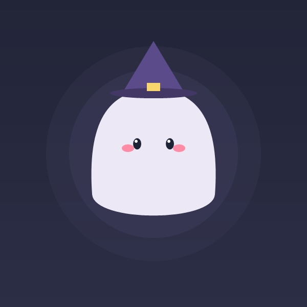

시즌 한정 심리분석
나의 할로윈 캐릭터는?
12가지 질문으로 알아보는 내 안의 숨겨진 밤의 영혼과 매력
안내 사항
신비로운 할로윈 밤, 마법의 성에 초대받은 상상을 하며 끌리는 선택지를 편안하게 골라주세요!
할로윈의 밤
Q1 / 12
질문 내용이 여기에 표시됩니다.
마법의 수정구슬로 성향을 분석하고 있어요
나와 가장 닮은 할로윈 영혼을 찾는 중...
TYPE 01
달콤한 꼬마 마녀

한줄 요약이 여기에 표시됩니다.
나의 영혼 본질 심층 분석
상세 분석 내용이 여기에 표시됩니다.
남들이 보는 내 겉모습
-
혼자 있을 때 진짜 속마음
-
나의 몬스터 능력치 스탯
사교 에너지 (외향성)
감성 & 공감 게이지
95%
집콕 & 힐링 본능
85%
멘탈 쿠쿠다스 지수
80%
소름 돋게 정확한 내 특징 4선
연애할 때 나의 스타일
나를 대할 때 취급 설명서
나를 화나게 하는 순간
-
멘탈 급속 충전법
-
친구들과 비교하는 영혼의 케미
환상의 소울메이트
시크한 뱀파이어 귀족
내 차가움을 녹여주는 온기
만나면 기 빨리는 파국
유쾌한 잭오랜턴
텐션 차이로 기 빨림
가을 힐링을 위한 추천 아이템
이 포스팅은 쿠팡 파트너스 활동의 일환으로, 이에 따른 일정액의 수수료를 제공받습니다.
참여자 실시간 톡 & 후기
내 할로윈 캐릭터와 소감을 자유롭게 나눠보세요